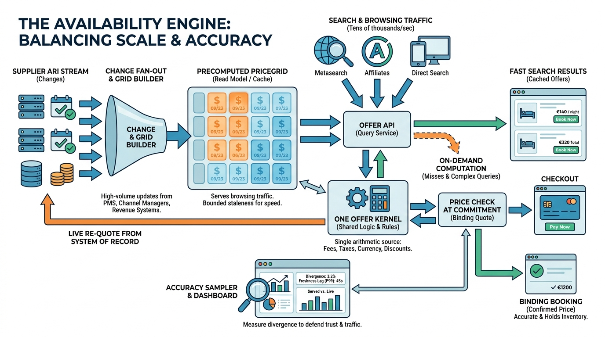

Part III — INVENTORY: Availability, Rates and Price
Is It Still Available? Availability Search, Caching and Price Accuracy

Image generated by Google Gemini (gemini-3-pro-image-preview)
Part III — INVENTORY: Availability, Rates and Price

Image generated by Google Gemini (gemini-3-pro-image-preview)